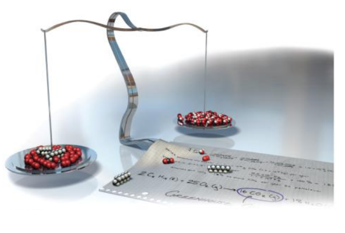
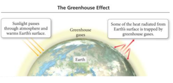
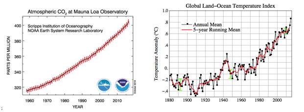
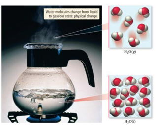
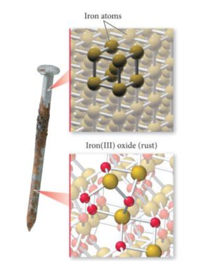
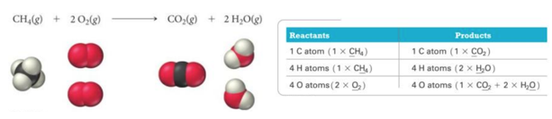
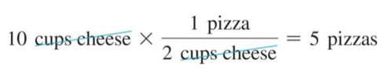

Week 10 - Day 1
Navigate using audio
Chapter 8
- Audio 0:01:43.748905
- Chemical Reactions and Chemical Quantities
- 
Climate Change and Combustion of Fossil Fuels: The Greenhouse Effect
- Audio 0:02:03.985553
- Greenhouse gases in
the atmosphere:
- Allow sunlight to enter the atmosphere
- Warm Earth’s surface
- Prevent some of the heat generated by the sunlight from escaping
- 
- The balance between incoming and outgoing energy from the sun determines Earth’s average temperature.
Global Warming
- Scientists have measured an average >0.8 °C rise in atmospheric temperature since 1860.
- During the same period, atmospheric CO2 levels have risen >25%.
- Are the two trends causal?
- 
How Much Matters
- Audio 0:04:16.146433
- It’s important to know how much CO2 is in the air. We’re going to learn how to calculate that
Physical Changes in Matter
What is a physical change?
- Audio 0:04:38.768317
- Changes that alter only the state or appearance, but not composition, are physical changes.
- The atoms or molecules that compose a substance do not change their identity during a physical change.
- 
- When water boils, it changes its state from a liquid to a gas.
- The gas remains composed of water molecules, so this is a physical change.
Chemical Changes in Matter
What is a chemical change?
- Audio 0:05:34.019413
- Changes that alter the composition of matter are chemical changes.
- During a chemical change, atoms rearrange, transforming the original substances into different substances.
- 
- A rusting nail is a chemical change.
- Rust occurs when the iron atoms exchange electrons with oxygen atoms— combining to form a NEW or different chemical substance.
- Iron rust is the compound iron(III) oxide (Fe2O3).
Clicker 1
- A chemical change
- A) occurs when methane gas is burned.
- B) occurs when paper is shredded.
- C) occurs when water is vaporized.
- D) occurs when salt is dissolved in water.
- E) occurs when powdered lemonade is stirred into water.
Chemical Reactions
Writing and Balancing Chemical Reactions
- Audio 0:10:25.923688
- Reactions involve chemical changes in matter resulting in new substances.
- Reactions involve rearrangement and exchange of atoms to produce new molecules.
- A chemical reaction is a written statement.
- It states the quantities, the chemical identity of the substances in the reaction, and their physical state.
- Example:
- CH4(g) + O2(g) → CO2(g) + H2O(l)
- Reactants → Products
Chemical Equations - Short hand for Describing a Chemical Reaction
- Chemical equations:
- Provide information about the reaction
- Molecular or ionic formulas of reactants and products
- States of reactants and products
- Gas (g), liquid (l), solid (s), and aqueous (aq)
- Relative numbers of reactant and product molecules that are required
- Can be used to determine weights of reactants used and products that can be made
The Quantities in Chemical Reactions
- Audio 0:13:21.733959
- The amount of every substance used and made in a chemical reaction is related to the amounts of all the other substances in the reaction.
- Law of conservation of mass
- Balancing equations by balancing atoms
- The study of the numerical relationship between chemical quantities in a chemical reaction is called stoichiometry.
- 
Practice Problem: Balancing and Writing Chemical Equations
- Audio 0:15:29.644462
- Write a balanced equation for the reaction between solid cobalt (III) oxide and solid carbon to produce solid cobalt and carbon dioxide gas
Practice Problem: Balancing and Writing Chemical Equations
- Audio 0:21:12.182118
- Write a balanced equation for the combustion of gaseous butane (C4H10) with gaseous oxygen to give carbon dioxide and gaseous water.
Clicker 2
- What is the stoichiometric coefficient for oxygen?
- B2H6(g) + O2(g) -> B2O3(s) + H2O(g)
- What is the stoichiometric coefficient for oxygen?
- A) 1
- B) 2
- C) 3
- D) 4
- E) 6
Clicker 3
- Audio 0:33:38.836503
- Balance the following equation with the smallest whole number coefficients. Choose the answer that is the sum of the coefficients in the balanced equation. Do not forget coefficients of “one.”
- Cr2(SO4)3 + RbOH -> Cr(OH)3 + Rb2SO4
- A) 10
- B) 12
- C) 13
- D) 14
- E) 15
Reaction Stoichiometry: What Is it about?
- Audio 0:36:31.466481
- The coefficients in a chemical reaction specify the relative amounts in molecules and in moles of each of the
substances involved in the reaction.
- 2 C8H18(l) + 25 O2(g) → 16 CO2(g) + 18 H2O(g)
- This could mean molecules or moles
- 2 C8H18(l) + 25 O2(g) → 16 CO2(g) + 18 H2O(g)
- What the above BALANCED chemical equation says:
- 2 molecules of C8H18 react with 25 molecules of O2 to form 16 molecules of CO2 and 18 molecules of H2O.
- 2 moles of C8H18 react with 25 moles of O2 to form 16 moles of CO2 and 18 moles of H2O.
- 2 mol C8H18 : 25 mol O2 : 16 mol CO2 : 18 mol H2O
Cooking Stoichiometry: Making Pizza
- Audio 0:38:36.393984
- The number of pizzas you can make depends on the amount of ingredients you use.
- 1 crust + 5 oz. tomato sauce + 2 cups cheese → 1 pizza
- This relationship can be expressed mathematically.
- 1 crust : 5 oz. sauce : 2 cups cheese : 1 pizza
- We can compare the amount of pizza that can be made from 10 cups of cheese:
- Since 2 cups cheese : 1 pizza, then:
- 
- 10 cups of cheese = 5 pizzas
Mole-to-Mole Conversions
- Audio 0:41:17.963464
- In the same way that the ratio was used from the pizza recipe example, the stoichiometric ratio acts as a conversion factor between the amount in moles of a reactant to moles of a product.
- 2 C8H18(l) + 25 O2(g) → 16 CO2(g) + 18 H2O(g)
- Reactant to product:
- Stoichiometric ratio: 2 moles C8H18 : 16 moles CO2
- Stoichiometric ratio can be between:
- Reactant to reactant
- Stoichiometric ratio: 2 moles C8H18 : 25 moles O2
- Product to product:
- Stoichiometric ratio: 16 moles CO2 : 18 moles H2O
- Reactant to reactant
How Many Moles of CO2 Form If 22.0 Moles of C8H18 Are combusted (Burned)?
- Audio 0:42:05.496505
Mole-to-Mass and Mass-to-Mass Conversions
- Stoichiometric ratios can be used as a conversion factor between the amount in grams (mass) of a reactant used to determine mass (grams) of a product made.
- Strategy: A is reactant and B is the product.
- Mass of A → Moles of A → Stoichiometric ratio B : A → Moles B → Mass B
- mass A × (1 mole A/mol.mass A) × (mole B/mole A) × (mol.mass B/1 mol B)
| Term | Definition |
|---|---|
| physical change | changes that alter only the state or appearance, but not composition |
| chemical changes | changes that alter the composition of matter |
| stoichiometry | the study of the numerical relationship between chemical quantities in a chemical reaction |
| stoichiometric ratio | acts as a conversion factor between the amount in moles of a reactant to moles of a product |